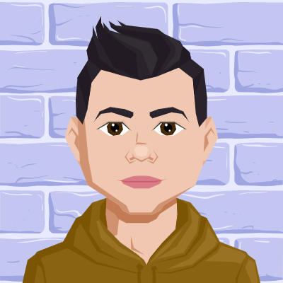

About me
My name is Danail Gatev, and I’m currently a student at Sofian Highschool of Mathematics "Paicius of Hilendar" in Bulgaria.
I’ve always been interested in technology and how things work behind the screen, and over time that interest grew into a real passion for programming and creating games.
I started programming around 12 years old, when I first discovered how exciting it is to make something from nothing — just by typing lines of code.
At first, I was curious about how games and websites were made, but soon I started experimenting on my own, trying to build small projects and solve logical problems.
Right now, I enjoy working with c++ and python, and I like learning new things whenever I can.
Most of my projects are small, but each one teaches me something new — whether it’s how to fix bugs, design better levels, or make code more efficient.
I believe that every project, no matter how simple, is a step forward.
Besides programming, I’m also into math. I like challenges that make me think, and I try to bring that same problem-solving mindset into my coding and design.
This website is where I share my games, projects, and blog posts, all in one place. It started as a school project, but now it’s become my personal space for creativity, learning, and progress.
I see it as a kind of digital notebook — a place to keep track of what I’ve done, and maybe inspire others who are just starting out too.
In the future, I hope to keep improving my skills, explore more advanced topics in programming, and create bigger, more complex projects.
But for now, I’m just enjoying the process — learning, experimenting, and seeing how each idea comes to life one step at a time.
Thanks for visiting my page! Feel free to check out my games, projects, or posts — and if you’re also into coding or puzzles, maybe you’ll find something familiar here.